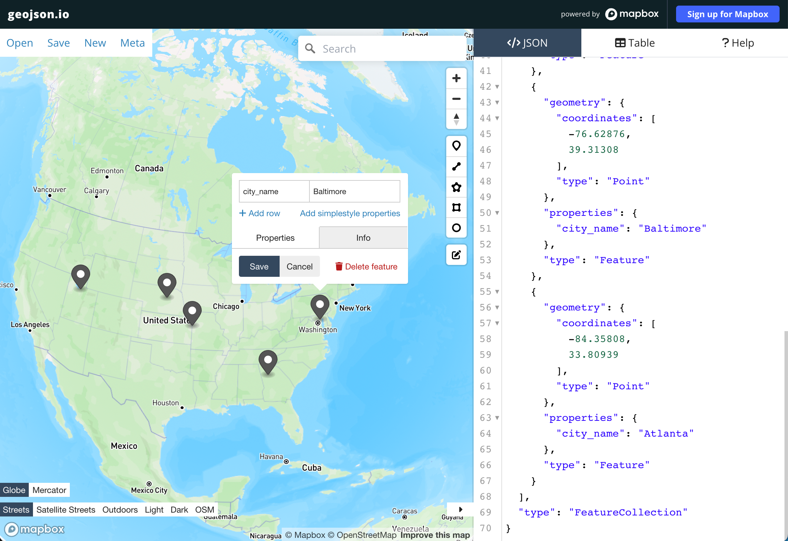

This Quickstart will help you get started with the Mapbox Snowflake native app, which adds new user-defined functions (UDFs) for geocoding that you can use in your SQL queries. Geocoding converts your address data (e.g. "1600 Pennsylvania Ave, Washington, DC, 20500") into geographic coordinates which can be used for mapping and spatial analysis.
The Mapbox Snowflake native app is powered by the Mapbox Geocoding API.
IMPORTANT - The commands and examples below assume the name of the Mapbox native application is mapbox. When you install the Mapbox native application you have the option to name the application differently. If you name the application something besides mapbox then be sure to change mapbox in the commands and examples below to match the name you used for the application.
Create an API integration pointed at Mapbox's API. Note that only the ACCOUNTADMIN role has the CREATE INTEGRATION privilege by default. The privilege can be granted to additional roles as needed.
CREATE API INTEGRATION mapbox_api_integration
API_PROVIDER = aws_api_gateway
API_AWS_ROLE_ARN = 'arn:aws:iam::234858372212:role/snowflake-mapbox-app-producti-EndpointFunctionRole-8FK34K9GGZTB'
API_ALLOWED_PREFIXES = ('https://tib1ddi7l4.execute-api.us-east-1.amazonaws.com/v1/endpoint')
ENABLED = true;
After running the command above, run the below command to allow the Mapbox application to use the API integration you just created:
GRANT USAGE ON INTEGRATION mapbox_api_integration to application mapbox;
Install the user-defined functions (UDF's) provided by the application:
CALL mapbox.core.setup('mapbox_api_integration')
You will need to do this step any time you want the Mapbox application to be able to access certain databases, schemas, and tables within your Snowflake account, specifying the names of those specific resources in your Snowflake account. The below is an example.
Grant access to allow the application to access databases, schemas, and tables within your Snowflake account. The below assumes you have a database called "mydatabase" with a schema called "testing", and a table called "sample_addresses".
GRANT USAGE ON DATABASE mydatabase to application mapbox
GRANT USAGE ON SCHEMA mydatabase.testing to application mapbox
GRANT SELECT ON TABLE mydatabase.testing.sample_addresses to application mapbox
Geocoding requires either a column a fully-formed addresses or address data in multiple columns.
Results will depend on the quality and consistency of your data. Address data spread across multiple columns can improve results as the geocoder knows exactly which state, zip, country, etc to search for a matching address within.
Before geocoding with the Mapbox App you may want to clean up your address data, ensuring a consistent format and/or filling in missing values.
This example table shows a fully formed address string in a single column:
ADDRESS |
200 West 47th Street, New York, New York 10036, United States |
402 World Way, Los Angeles, California 90045, United States |
Van Wyck Expressway, Queens, New York 11430, United States |
Macombs Dam Bridge, Bronx, New York 10451, United States |
77 East 42nd Street, New York, New York 10017, United States |
This example table shows "structured" address data spread across four columns:
ADDRESS | CITY | STATE | ZIP |
200 K St NE | Washington DC | DC | 20002 |
500 L'enfant Plaza SW | Washington DC | DC | 20024 |
2197 Plumleigh Dr | Fremont | CA | 94539 |
5034 Curtiss St | Fremont | CA | 94538 |
51 S Washington St | Sonora | CA | 95370 |
When geocoding with structured data, each column should correspond to one of the address parts in the table below. Not all parts are required, but providing more parts can increase the accuracy of your results. For more details, see the documentation for the Mapbox Geocoding API.
Your columns can be named however you like, you will be able to specify which column to use for each address part when using the Mapbox App.
Address Part | Type | Description |
| string | A string including address_number and street. These values can alternatively be provided as separate parameters. |
| string | The number associated with the house. |
| string | The name of the street in the address |
| string | In some countries like Japan, the block is a component in the address |
| string | Typically these are cities, villages, municipalities, etc. They're usually features used in postal addressing, and are suitable for display in ambient end-user applications where current-location context is needed (for example, in weather displays). |
| string | Top-level sub-national administrative features, such as states in the United States or provinces in Canada or China. |
| string | Postal codes used in country-specific national addressing systems. |
| string | Official sub-city features present in countries where such an additional administrative layer is used in postal addressing, or where such features are commonly referred to in local parlance. Examples include city districts in Brazil and Chile and arrondissements in France. |
| string | Colloquial sub-city features often referred to in local parlance. Unlike locality features, these typically lack official status and may lack universally agreed-upon boundaries. Not available for reverse geocoding requests. |
| string | Generally recognized countries or, in some cases like Hong Kong, an area of quasi-national administrative status that has been given a designated country code under ISO 3166-1. |
When your addresses live in a single column as fully-formed address strings, use the geocode_forward() function.
Forward geocoding is powered by the Mapbox Geocoding API, which includes global address coverage, supported by continously updated high-quality Mapbox location data. You can try out individual address queries and inspect the results using our Geocoding API Playground.
To get more familiar with the function syntax and results, you can call geocode_forward() without specifying a table. Just provide a hard coded address in your query:
SELECT
mapbox.core.geocode_forward(
'1600 Pennsylvania Ave NW Washington, DC'
) AS geocoder_response
GEOCODER_RESPONSE |
{"accuracy":"rooftop", "confidence":"high", "context":{"country":{"country_code":"US", "country_code_alpha_3":"USA", "mapbox_id":"dXJuOm1ieHBsYzpJdXc", "name":"United States", "wikidata_id":"Q30"}, "neighborhood":{"alternate":{"mapbox_id":"dXJuOm1ieHBsYzpEY1ZNN0E", "name":"Franklin Mcpherson Square"}, "mapbox_id":"dXJuOm1ieHBsYzpHYUVzN0E", "name":"National Mall"}, "place":{"mapbox_id":"dXJuOm1ieHBsYzpGSmlvN0E", "name":"Washington", "wikidata_id":"Q61"}, "postcode":{"mapbox_id":"dXJuOm1ieHBsYzpBOEZPN0E", "name":"20500"}, "region":{"mapbox_id":"dXJuOm1ieHBsYzpCUVRz", "name":"District of Columbia", "region_code":"DC", "region_code_full":"US-DC", "wikidata_id":"Q3551781"}}, "feature_type":"address", "latitude":38.89768, "longitude":-77.03655, "mapbox_id":"dXJuOm1ieGFkcjo2YzdhYjM4Yi05YzM4LTQ3ZDItODFkMS1jYzZlYjg5YzliMWM", "name":"1600 Pennsylvania Avenue Northwest", "place_formatted":"Washington, District of Columbia 20500, United States"} |
The resulting column includes a nested JSON object with full details about how the geocoder processed the address. You can see accuracy, confidence, and additional context. The latitude and longitude are also included in this response. For more details on the response JSON, see the documentation for the Mapbox Geocoding API.
While you may want to keep the full response for future reference, a more likely workflow is to extract the most useful information from the response.
The full response from the geocoder includes a lot of information you may not need. You can extract the values you care most about from this response with a bit more SQL.
Geocode an address string, and select the accuracy, confidence, lng, and lat from the response:
WITH raw_geocoder_response AS (
SELECT
mapbox.core.geocode_forward(
'1600 Pennsylvania Ave NW Washington, DC'
) AS geocoder_response
)
SELECT
'1600 Pennsylvania Ave NW Washington, DC' AS input_string
geocoder_response:accuracy AS accuracy,
geocoder_response:confidence AS confidence,
geocoder_response:longitude AS lng,
geocoder_response:latitude AS lat
FROM raw_geocoder_response
In this result set we can easily see the input address along with the accuracy, confidence and coordinates that came from the geocoder.
INPUT_STRING | ACCURACY | CONFIDENCE | LNG | LAT |
1600 Pennsylvania Ave NW Washington, DC | "rooftop" | "high" | -77.03655 | 38.89768 |
Now that you're familiar with the geocode_forward() function, you can try it out with a real table. Use your own table, or use the sample_addresses table that comes included with the Mapbox App.
Note: While you're experimenting with the Mapbox App's functions, you may want to add a LIMIT to your queries to avoid sending a large amount of data to the geocoder.
Geocode the address column in the sample_addresses table:
WITH geocoder_results AS (
SELECT
address AS input_string,
mapbox.core.geocode_forward(
address
) AS reponse_json
FROM mapbox.sample_data.sample_addresses
LIMIT 5
)
SELECT
input_string,
reponse_json:accuracy AS accuracy,
reponse_json:confidence AS confidence,
reponse_json:longitude AS lng,
reponse_json:latitude AS lat
FROM geocoder_results
INPUT_STRING | ACCURACY | CONFIDENCE | LNG | LAT |
200 West 47th Street, New York, New York 10036, United States | "rooftop" | "exact" | -73.98487 | 40.75919 |
402 World Way, Los Angeles, California 90045, United States | "rooftop" | "exact" | -118.40796 | 33.94218 |
Van Wyck Expressway, Queens, New York 11430, United States | null | null | -73.810305 | 40.69017 |
Macombs Dam Bridge, Bronx, New York 10451, United States | null | null | -73.9311270691973 | 40.8283336337234 |
77 East 42nd Street, New York, New York 10017, United States | "rooftop" | "exact" | -73.97728 | 40.75264 |
In the examples above, we called geocode_forward() passing in a single string value. Additional optional values can be passed in to control the respose, using the following signature:
geocode_forward (
query STRING,
bbox STRING, -- Limit results to only those contained within the supplied bounding box
country STRING, -- Limit results to one or more countries.
format STRING, -- Specify the desired response format of results
language STRING, -- Set the language of the text supplied in responses
proximity STRING, -- Bias the response to favor results that are closer to this location.
types STRING, -- Filter results to include only a subset (one or more) of the available feature types.
worldview STRING -- Returns features that are defined differently by audiences that belong to various regional, cultural, or political groups.
)
For more details on valid values for these options, see the documentation for the Mapbox Geocoding API.
Once you have a test result set showing up the way you want it based on a limited number of rows, you can run the query on your full dataset. You may want to use CREATE TABLE AS to create a new table for the results, or use an UPDATE query to set values from the geocoder in your original table.
When your data lives in multiple columns, use the Mapbox App's geocode_structured() function to get results.
geocode_structured() has the following signature:
geocode_structured(
address_line1 STRING,
address_number STRING,
street STRING,
block STRING,
place STRING,
region STRING,
postcode STRING,
locality STRING,
neighborhood STRING,
country STRING
)
You must always call geocode_structured() with all parameters. Use null if you don't have a value to pass in. For more details on valid values for these parameters, see the documentation for the Mapbox Geocoding API.
As we did above, start with a simple query that contains hard-coded values. This query is for the street address of the Empire State Building in New York City.
SELECT mapbox.core.geocode_structured(
null, --address_line1
'2', --address_number
'West 34th Street', --street
null, --block
'New York', --place
'NY', --region
'10118', --postcode
null, --locality
null, --neighborhood
'United States' --country
) as reponse_json
RESPONSE_JSON |
{"context":{"country":{"country_code":"US", "country_code_alpha_3":"USA", "mapbox_id":"dXJuOm1ieHBsYzpJdXc", "name":"United States", "wikidata_id":"Q30"}, "district":{"mapbox_id":"dXJuOm1ieHBsYzpBUU5tN0E", "name":"New York County", "wikidata_id":"Q500416"}, "locality":{"mapbox_id":"dXJuOm1ieHBsYzpGREtLN0E", "name":"Manhattan", "wikidata_id":"Q11299"}, "place":{"mapbox_id":"dXJuOm1ieHBsYzpEZTVJN0E", "name":"New York", "wikidata_id":"Q60"}, "postcode":{"mapbox_id":"dXJuOm1ieHBsYzpBWUFPN0E", "name":"10118"}, "region":{"mapbox_id":"dXJuOm1ieHBsYzpBYVRz", "name":"New York", "region_code":"NY", "region_code_full":"US-NY", "wikidata_id":"Q1384"}}, "feature_type":"postcode", "latitude":40.748451, "longitude":-73.985649, "mapbox_id":"dXJuOm1ieHBsYzpBWUFPN0E", "name":"10118", "place_formatted":"New York, New York, United States"} |
Note that when using geocode_structured(), the response does not include the same properties as geocode_forward(). For more details on the response JSON, see the documentation for the Mapbox Geocoding API.
Next, pull out the latitude and longitude properties from the response JSON for a tidier result set.
WITH geocoder_results AS (
SELECT mapbox.core.geocode_structured(
null, --address_line1
'2', --address_number
'West 34th Street', --street
null, --block
'New York', --place
'NY', --region
'10118', --postcode
null, --locality
null, --neighborhood
'United States' --country
) as reponse_json
)
SELECT
reponse_json:longitude AS lng,
reponse_json:latitude AS lat
FROM geocoder_results
LNG | LAT |
-73.985649 | 40.748451 |
Now that you're familiar with geocode_structured(), you can try it on a table.
Create a temporary table called address_data with some address data in multiple columns:
CREATE TEMPORARY TABLE address_data (
address VARCHAR(25) NOT NULL,
city VARCHAR(25) NOT NULL,
state VARCHAR(2) NOT NULL,
zip VARCHAR(5) NOT NULL
);
INSERT INTO address_data VALUES('200 K St NE', 'Washington DC', 'DC', '20002');
INSERT INTO address_data VALUES('500 L\'enfant Plaza SW', 'Washington DC', 'DC', '20024');
INSERT INTO address_data VALUES('2197 Plumleigh Dr', 'Fremont', 'CA', '94539');
INSERT INTO address_data VALUES('5034 Curtiss St', 'Fremont', 'CA', '94538');
INSERT INTO address_data VALUES('51 S Washington St', 'Sonora', 'CA', '95370');
SELECT * FROM address_data;
ADDRESS | CITY | STATE | ZIP |
200 K St NE | Washington DC | DC | 20002 |
500 L'enfant Plaza SW | Washington DC | DC | 20024 |
2197 Plumleigh Dr | Fremont | CA | 94539 |
5034 Curtiss St | Fremont | CA | 94538 |
51 S Washington St | Sonora | CA | 95370 |
Use geocode_structured() to geocode these 5 rows. In this example query we are including all four original columns in the initial SELECT so we can display them along with the lng and lat in the result set.
WITH geocoder_results AS (
SELECT
address,
city,
state,
zip,
mapbox.core.geocode_structured(
address, --address_line1
null, --address_number
null, --street
null, --block
city, --place
state, --region
zip, --postcode
null, --locality
null, --neighborhood
'United States' --country
) AS reponse_json
FROM address_data
)
SELECT
address,
city,
state,
zip,
reponse_json:longitude AS lng,
reponse_json:latitude AS lat
FROM geocoder_results
ADDRESS | CITY | STATE | ZIP | LNG | LAT |
200 K St NE | Washington DC | DC | 20002 | -77.00821 | 38.898064 |
500 L'enfant Plaza SW | Washington DC | DC | 20024 | -77.01744 | 38.87282 |
2197 Plumleigh Dr | Fremont | CA | 94539 | -121.94887 | 37.53976 |
5034 Curtiss St | Fremont | CA | 94538 | -121.97764 | 37.52355 |
51 S Washington St | Sonora | CA | 95370 | -120.38366 | 37.98597 |
Once you have a test result set showing up the way you want it based on a limited number of rows, you can run the query on your full dataset. You may want to use CREATE TABLE AS to create a new table for the results, or use an UPDATE query to set values from the geocoder in your original table.
Working with spatial data often requires rendering the geometries on a map to validate that things are working as expected. There are several ways to get your spatial data onto a map, but they require either a live connection to your data warehouse, or exporting the data as a CSV file to be opened in another tool.
With a bit of SQL, it's possible to build a GeoJSON string from your spatial data. GeoJSON is a widely used spatial data format that may be easier for some tools to parse than a CSV with longitude and latitude columns. The following example query will generate a GeoJSON featurecollection, which can be copied or downloaded for use in other spatial tools.
Learn more about the geojson format at geojson.org.
Given a table us_cities with longitude, latitude, and city_name columns:
LONGITUDE | LATITUDE | CITY_NAME |
-98.59796 | 41.84907 | Los Angeles |
-111.8867 | 40.75977 | Salt Lake City |
-94.5702 | 39.09613 | Kansas City |
-76.62876 | 39.31308 | Baltimore |
-84.35808 | 33.80939 | Atlanta |
You can create a GeoJSON FeatureCollection with this SQL query. Each feature will have a Point geometry with the coordinates from the original table, and a properties object including the value from the city_name column.
SELECT
TO_JSON(
OBJECT_CONSTRUCT(
'type', 'FeatureCollection',
'features', ARRAY_AGG(
OBJECT_CONSTRUCT(
'type', 'Feature',
'geometry', ST_ASGEOJSON(
ST_POINT(
longitude,
latitude
)
),
'properties', OBJECT_CONSTRUCT(
'city_name', city_name
)
)
)
)
) AS featurecollection
FROM us_cities
FEATURECOLLECTION |
{"features":[{"geometry":{"coordinates":[-9.859796000000000e+01,4.184907000000000e+01],"type":"Point"},"properties":{"city_name":"Los Angeles"},"type":"Feature"},{"geometry":{"coordinates":[-1.118867000000000e+02,4.075977000000000e+01],"type":"Point"},"properties":{"city_name":"Salt Lake City"},"type":"Feature"},{"geometry":{"coordinates":[-9.457020000000000e+01,3.909613000000000e+01],"type":"Point"},"properties":{"city_name":"Kansas City"},"type":"Feature"},{"geometry":{"coordinates":[-7.662876000000000e+01,3.931308000000000e+01],"type":"Point"},"properties":{"city_name":"Baltimore"},"type":"Feature"},{"geometry":{"coordinates":[-8.435808000000000e+01,3.380939000000000e+01],"type":"Point"},"properties":{"city_name":"Atlanta"},"type":"Feature"}],"type":"FeatureCollection"} |
The geojson string can be easily copied from the snowflake UI. (Copying may not be feasible if your result set is too large):
Geojson.io is a free website for previewing and editing geojson data. You can paste in your copied GeoJSON FeatureCollection or drag in your downloaded file, and your points will appear on the map as markers.
You can click each marker to reveal the associated properties.

Your geojson file can be opened in desktop GIS software like QGIS. Paste your copied GeoJSON into a file and save it with the .geojson extension. The file can be opened in QGIS, where you can choose a symbology for the points and preview it over a basemap.
The Mapbox App includes two other useful functions for reverse geocoding (converting point coordinates to addresses) and boundary lookup (e.g. determining which zip code each point lies in)
Reverse geocoding is the process of converting point coordinates to addresses. For example, the coordinates -73.9857, 40.7484 would be reverse geocoded to `2 W 34th Street, New York, NY
Reverse geocoding is powered by the Mapbox Geocoding API, which includes global address coverage, supported by continously updated high-quality Mapbox location data. You can try out individual reverse geocoding queries and inspect the results using our Geocoding API Playground.
To perform reverse geocoding on your snowflake data, use the geocode_reverse() function.
Example reverse geocoding query with hard-coded coordinates:
WITH reverse_geocode_results AS (
SELECT
mapbox.core.geocode_reverse(
-77.0366, -- longitude
38.8976, -- latitude
null, -- country
null, -- language
null, -- types
null -- worldview
) AS response_json
)
SELECT
response_json:name AS name,
response_json:place_formatted AS place_formatted
FROM reverse_geocode_results
NAME | PLACE_FORMATTED |
"1600 Pennsylvania Avenue Northwest" | "Washington, District of Columbia 20500, United States" |
Unlike the geocoding functions covered in this quickstart, mapbox_boundaries_reverse_enrich() is a stored procedure. Stored procedures aren't used in SQL queries, rather they are called on their own and update a specific table with new data.
mapbox_boundaries_reverse_enrich() will take longtude and latitude values from columns you specify, and populate another column with the corresponding administrative boundary identifier. For example, if you wanted to know which U.S. State the coordinates -98.59796, 41.84907 fall within, mapbox_boundaries_reverse_enrich() would return ‘Nebraska'.
Example mapbox_boundaries_reverse_enrich() call:
CREATE TABLE boundary_lookup (
longitude DOUBLE NOT NULL,
latitude DOUBLE NOT NULL,
state OBJECT
);
INSERT INTO boundary_lookup VALUES(-98.59796, 41.84907, null); -- Los Angeles
INSERT INTO boundary_lookup VALUES(-111.88670, 40.75977, null);-- Salt Lake City
INSERT INTO boundary_lookup VALUES(-94.57020, 39.09613, null); -- Kansas City
INSERT INTO boundary_lookup VALUES(-76.62876, 39.31308, null); -- Baltimore
INSERT INTO boundary_lookup VALUES(-84.35808, 33.80939, null); -- Atlanta
-- grant privileges on the table
GRANT ALL ON TABLE {database}.{schema}.boundary_lookup to application mapbox
CALL mapbox.core.mapbox_boundaries_reverse_enrich(
'search_poc',
'testing',
'boundary_lookup',
'state',
TRUE,
'longitude',
'latitude',
'adm1',
'US'
)
SELECT
longitude,
latitude,
state:name AS state_name,
state:join_attributes:iso_3166_2 AS iso_3166_2_code
FROM boundary_lookup
LONGITUDE | LATITUDE | STATE_NAME | ISO_3166_2_CODE |
-98.59796 | 41.84907 | "Nebraska" | "US-NE" |
-111.8867 | 40.75977 | "Utah" | "US-UT" |
-94.5702 | 39.09613 | "Missouri" | "US-MO" |
-76.62876 | 39.31308 | "Maryland" | "US-MD" |
-84.35808 | 33.80939 | "Georgia" | "US-GA" |